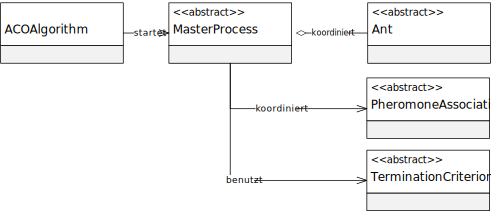
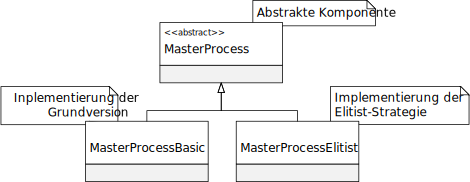

类 AbstractMasterProcess
java.lang.Object
eu.andredick.aco.masterprocess.AbstractMasterProcess
- 直接已知子类:
MasterProcessBasic,MasterProcessBasicParallel,MasterProcessElitist,MasterProcessElitistParallel
主流程的抽象组件
主进程负责协调信息素的初始化和蒸发 (参见
以及蚂蚁种群 (参见
为此，需在方法
这取决于抽象终止标准
主进程在
主进程负责协调信息素的初始化和蒸发 (参见
AbstractPheromoneAssociation)以及蚂蚁种群 (参见
AbstractAnt)来反映ACO元启发式的总体序列.为此，需在方法
start() 内实现迭代循环,这取决于抽象终止标准
AbstractTerminationCriterion 来执行.主进程在
ACOAlgorithm 中使用并从那里开始.


-
字段概要
字段修饰符和类型字段说明protected AbstractAnt[]需要协调的蚂蚁种群protected AbstractPheromoneAssociation与要解决的抽象问题相关联的信息素protected Statistics算法过程的统计protected AbstractTerminationCriterion迭代的取消标准 -
构造器概要
构造器构造器说明AbstractMasterProcess(AbstractPheromoneAssociation pheromoneStructure, AbstractAnt[] ants, AbstractTerminationCriterion termCriterion) 构造函数 -
方法概要
-
字段详细资料
-
ants
需要协调的蚂蚁种群 -
pheromoneStructure
与要解决的抽象问题相关联的信息素 -
termCriterion
迭代的取消标准 -
statistics
算法过程的统计
-
-
构造器详细资料
-
AbstractMasterProcess
public AbstractMasterProcess(AbstractPheromoneAssociation pheromoneStructure, AbstractAnt[] ants, AbstractTerminationCriterion termCriterion) 构造函数- 参数:
pheromoneStructure- 信息素与要解决的抽象问题相关联ants- 蚂蚁种群termCriterion- 迭代的取消标准
-
-
方法详细资料
-
start
类的接口ACOAlgorithm.
该方法启动主进程. -
getStatistics
提供有关算法流的统计信息.- 返回:
- 算法过程的统计
-